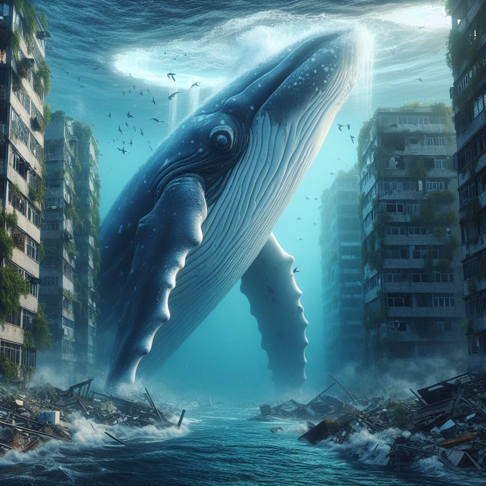
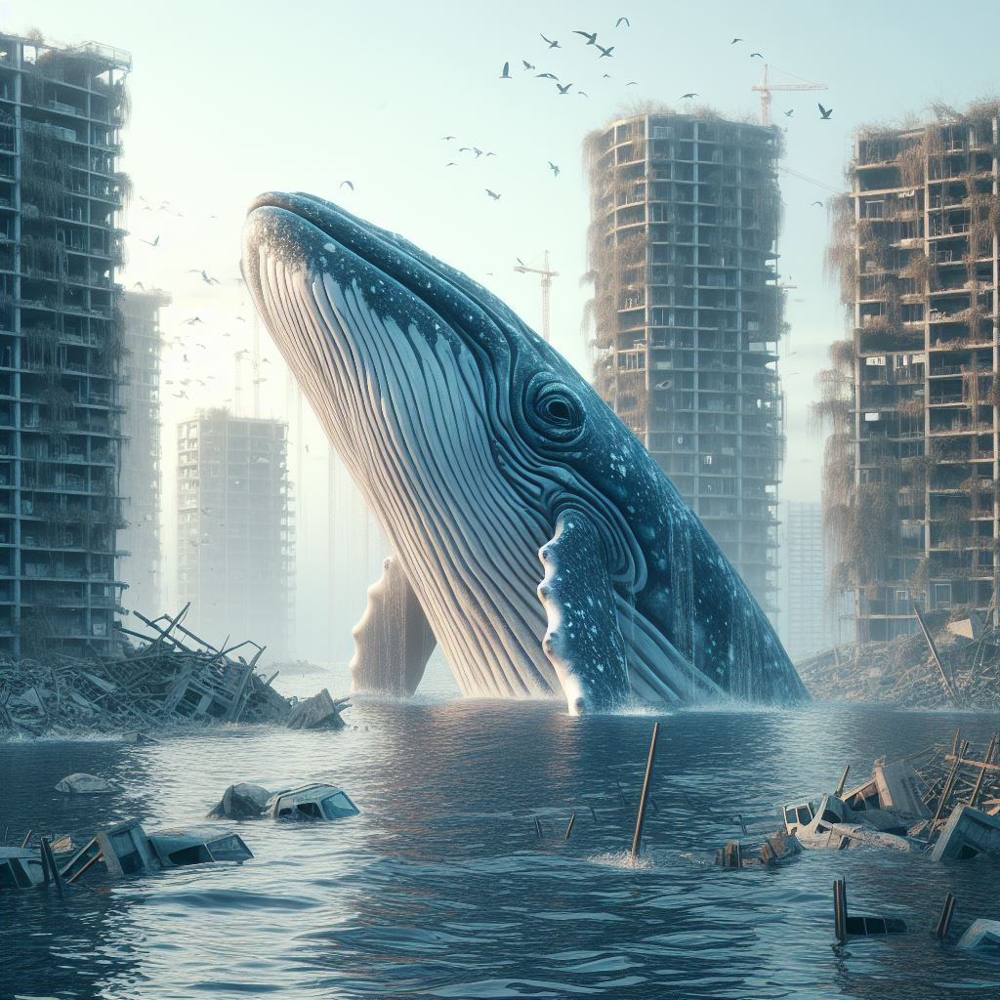
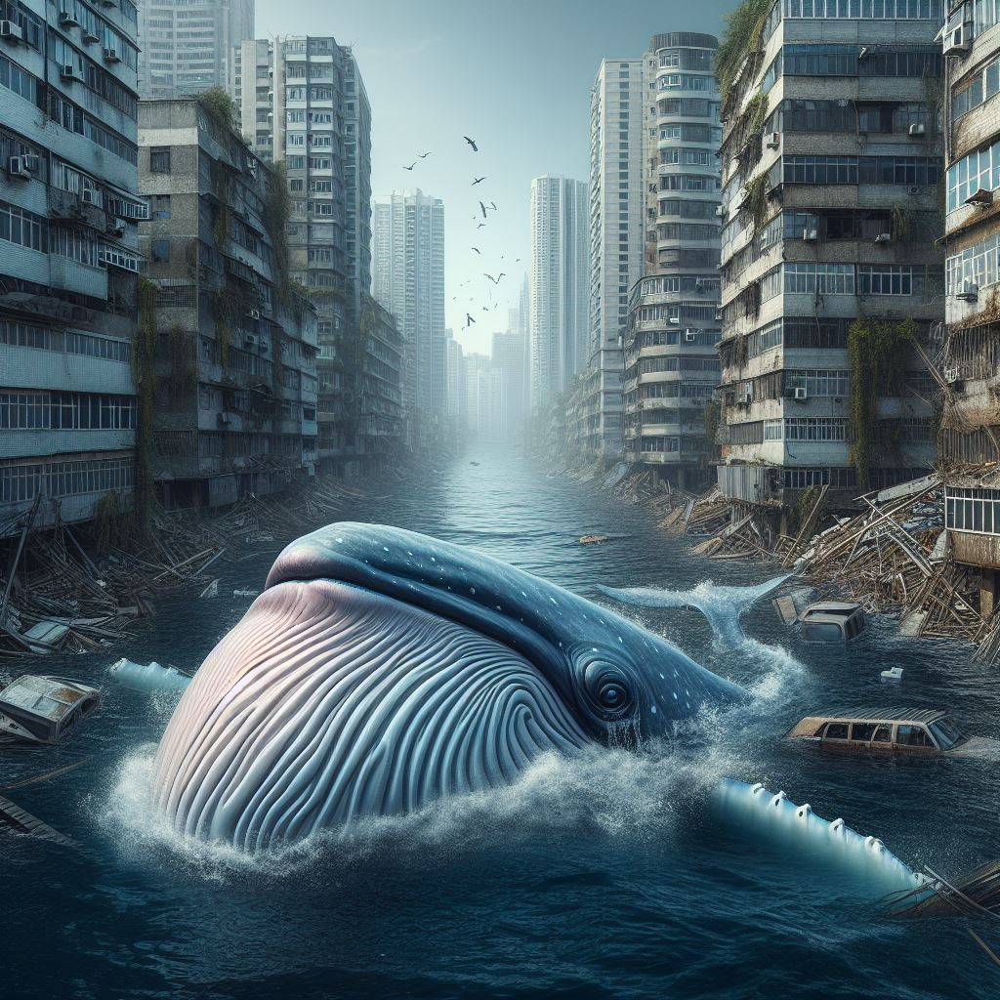

Rising sea levels pose significant threats to coastal communities and ecosystems around the world. If we do not take immediate action to mitigate climate change and reduce greenhouse gas emissions, the consequences could be catastrophic
A new species of whale, known as the "Debris Dweller," has emerged in the aftermath of rising sea levels. These whales, adapted to life among the debris of submerged buildings, have evolved unique characteristics to survive in their altered environment. With the loss of their natural habitats, the Debris Dwellers navigate through the ruins of cities, scavenging for food and shelter amidst the wreckage.
  As we continue to witness the devastating impacts of climate change and sea level rise, it's crucial that we recognize and address the profound consequences of our actions on the world's ecosystems and biodiversity.